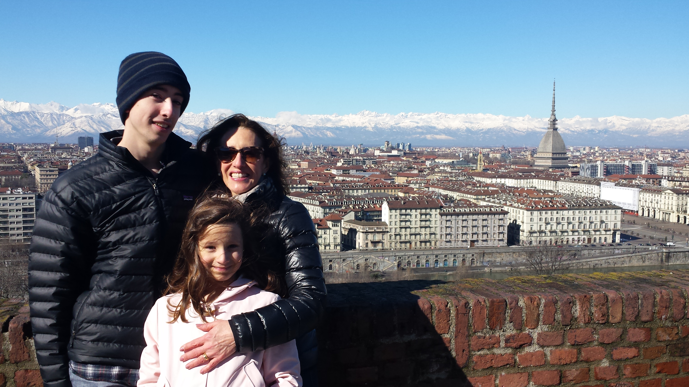

When Anamaria was in elementary school, her and her family moved their entire life from Michigan to Torino, Italy. This experience changed her view on the world, and made her realize change wasn’t so scary–it’s an opportunity to grow. She learned to adapt easily, and matured faster than others her age.
Not only did this personal experience affect her life and character, but the places she has worked also had a big impact. She has been working since she was 15 years old, starting her first job as a lifeguard as the Grosse Pointe Club. Through being a tennis coach and receptionist at Court 4 Detroit, she has learned exceptional customer service skills, managing skils, multi-tasking, and communication skills.
